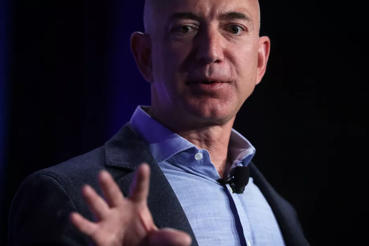

Jeff Bezos was named the richest man in modern history when his fortune hit the $150 billion mark in July. But he had not engaged in much philanthropy — at least publicly — until this week. Bezos announced two philanthropic goals on Thursday, launching a $2 billion fund to support homeless families and education programs in underserved communities. The Bezos Day One Fund will form a support network for homeless families and build early education program that Bezos called "full-scholarship, Montessori-inspired preschools." The announcement comes more than a year after Bezos requested input from his Twitter followers for creating a short-term philanthropy strategy. "I'm thinking I want much of my philanthropic activity to be helping people in the here and now — short term — at the intersection of urgent need and lasting impact," Bezos wrote. He cited the example of Mary's Place in Seattle, which provides shelter and employment training to people who are homeless. Amazon partnered with Mary's Place in 2016, turning an old hotel into a shelter for more than 200 family members. That space was later demolished to make room for two new Amazon office towers, but the company committed to giving Mary's Place a permanent home. Bezos himself has donated $1 million to the nonprofit. In a June 2017 letter published in Forbes, philanthropy adviser Jake Hayman criticized Bezos for focusing on short-term solutions and deciding to seek suggestions on Twitter. "The answer is not to provide shelter and employment services to homeless families everywhere but instead to fix the systems that have consistently and repeatedly failed people to the point at which they rely on charity," Hayman wrote.
